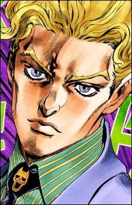

Дата рождения: 1966
Возраст: 33
Раса: Человек
Пол: Мужской
Национальность: Японец

Йошикаге Кира
Информация
Описание
Йошикаге Кира (吉良 吉影 Kira Yoshikage?) — главный антагонист четвертой части серии Невероятные приключения ДжоДжо, Несокрушимый алмаз, и третий главный антагонист в серии. Он также появляется в качестве протагониста в ван-шоте Все вопросы к мертвецам.
Кира — серийный убийца, годами скрывающийся в городе Морио. Оставаясь незамеченным большую часть своей жизни, Кира привлекает внимание Джостаров, когда неупокоенный призрак его первой жертвы, Рейми Сугимото, просит их о помощи в поиске убийцы. Стенд Киры, Killer Queen, обладает способностью превращать любой предмет во взрывчатку и детонировать его.
Кира — серийный убийца, годами скрывающийся в городе Морио. Оставаясь незамеченным большую часть своей жизни, Кира привлекает внимание Джостаров, когда неупокоенный призрак его первой жертвы, Рейми Сугимото, просит их о помощи в поиске убийцы. Стенд Киры, Killer Queen, обладает способностью превращать любой предмет во взрывчатку и детонировать его.
Манга
Аниме